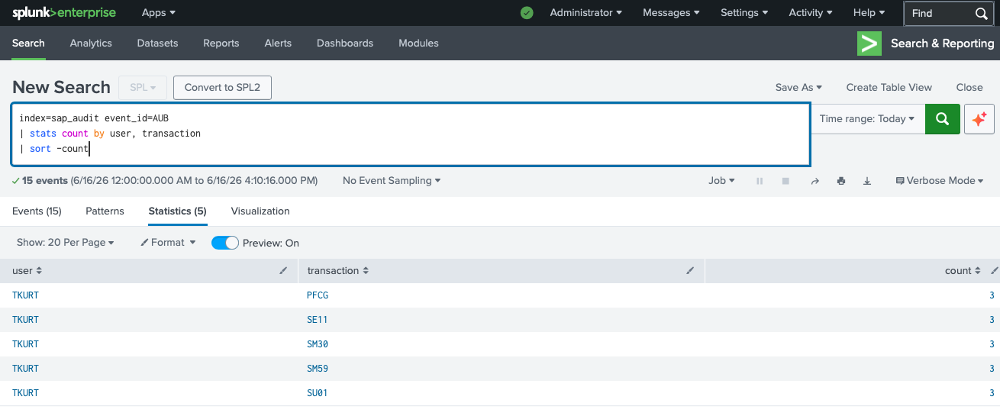

Was ist ein AUB-Storm?
Das SAP Security Audit Log Event AUB (Authorization Check Failed) wird immer dann generiert, wenn ein Benutzer versucht, auf eine Transaktion, ein Objekt oder eine Funktion zuzugreifen, für die er keine Berechtigung hat. Ein einzelnes AUB-Event ist normal — jeder Benutzer tippt gelegentlich einen falschen TCode.
Ein AUB-Storm hingegen — viele AUB-Events desselben Benutzers gegen mehrere administrative Transaktionen in kurzer Zeit — ist ein starkes Indiz für einen Privilege Escalation-Versuch: Der Benutzer testet systematisch, welche Admin-Funktionen er erreichen kann.
Warum das gefährlich ist: Privilege Escalation ist oft der zweite Schritt nach einem Initial Access. Der Angreifer hat bereits ein normales Benutzerkonto kompromittiert (z. B. über Phishing) und versucht nun, sich auf Admin-Ebene vorzuarbeiten — um dauerhaften Zugang, Datenexfiltration oder Sabotage zu ermöglichen.
Die angegriffenen Transaktionen
| TCODE | BEZEICHNUNG | RISIKO BEI ZUGRIFF | VERSUCHE |
|---|---|---|---|
| PFCG | Rollenverwaltung | Admin-Rechte an beliebige Benutzer vergeben | 3 |
| SE11 | ABAP Dictionary | Datenbankstruktur einsehen und manipulieren | 3 |
| SM30 | Tabellenpflege | Direkte Manipulation von Konfigurations- und Systemtabellen | 3 |
| SM59 | RFC-Verbindungen | Externe Verbindungen einrichten — Datenexfiltrations-Kanal | 3 |
| SU01 | Benutzerverwaltung | Neue Benutzer anlegen, Passwörter zurücksetzen | 3 |
Erkennung — Splunk SPL-Query
AUB-Storm identifizieren
Die Query aggregiert alle Berechtigungsfehler nach Benutzer und Transaktion. Mehrere Versuche desselben Benutzers gegen verschiedene administrative Transaktionen sind das Erkennungsmuster für Privilege Escalation.

Abb. 1 — TKURT mit 15 Berechtigungsfehlern gegen 5 kritische Transaktionen (je 3 Versuche) — klassischer AUB-Storm
Das Ergebnis ist eindeutig: TKURT hat gegen jede der fünf Transaktionen exakt drei Zugriffsversuche unternommen — ein Muster, das auf systematisches Testen hindeutet, nicht auf versehentliche Fehleingaben.
3 Versuche pro Transaktion: Dies ist kein Zufall. Angreifer testen häufig mehrfach, ob ein Berechtigungsfehler konsistent zurückgegeben wird oder ob ein zweiter Versuch nach kurzer Zeit erfolgreich ist — etwa nach einer Session-Unterbrechung oder einer Berechtigungsänderung.
Wichtige Erkenntnisse
TKURT hat nicht zufällig falsche TCodes eingegeben — er hat gezielt die kritischsten Admin-Transaktionen angesteuert. Das setzt Vorkenntnisse über SAP-Transaktionen voraus und deutet auf einen informierten Angreifer hin.
Der Versuch, SM59 (RFC-Verbindungen) zu öffnen, ist besonders alarmierend. Eine neue RFC-Verbindung zu einem externen Server wäre ein unsichtbarer Datenexfiltrations-Kanal — schwer zu erkennen, da RFC-Traffic legitim aussieht.
TKURT ist ein normaler Geschäftsbenutzer (Buchhaltung/Einkauf). Solche Benutzer kennen PFCG oder SM59 typischerweise nicht. Der echte TKURT führt diese Versuche wahrscheinlich nicht durch — sein Konto ist kompromittiert.
>5 AUB-Events desselben Benutzers gegen Transaktionen der Kategorie S_TCODE (Admin) innerhalb von 30 Minuten ist ein zuverlässiger, rauscharmer Alert. Keine False Positives bei normalen Benutzern.
Empfehlungen
Alle aktiven Sessions beenden, Passwort zurücksetzen, letzte Logins und IP-Adressen prüfen. Mit dem echten TKURT sprechen — hat er diese Aktionen durchgeführt?
Normale Geschäftsbenutzer dürfen nie Sichtbarkeit auf Admin-TCodes haben. SAP-Berechtigungskonzept überprüfen: S_TCODE-Objekt für kritische Transaktionen muss explizit vergeben werden.
Automatischer Alert bei >3 AUB-Events desselben Benutzers gegen TCodes der Admin-Whitelist (PFCG, SE38, SU01, SM59, SM30) innerhalb von 15 Minuten.
Alle SM59-Verbindungen auf unbekannte externe Ziele prüfen. Neue RFC-Destinations seit dem Vorfallszeitpunkt sind verdächtig und müssen sofort entfernt werden.
Nächster Teil dieser Serie: Externer RFC-Angriff — eine unbekannte externe IP versucht wiederholt, sich über die RFC-Schnittstelle des SAP-Produktivsystems zu authentifizieren. AU4-Events als Erkennungsmerkmal.